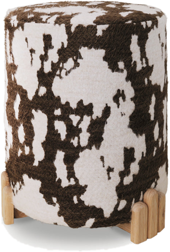
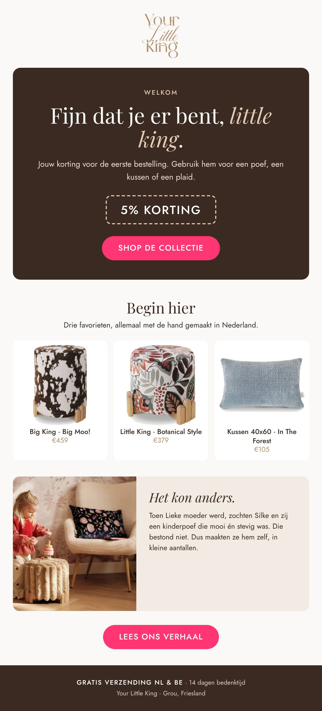
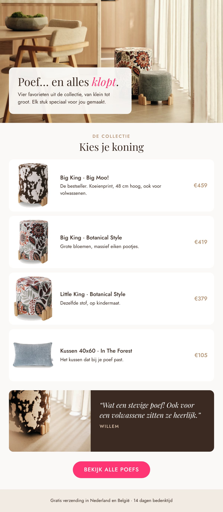

Voorbeelden voor Your Little King
Vijf redenen om een handgemaakte poef te kiezen.
Vijf advertenties en twee nieuwsbrieven, gemaakt met jullie eigen foto's en productinformatie. Een idee van Issey Kooijmans van Digital Essence; niets hiervan is gepubliceerd.
Hoi team Your Little King, jullie poefs worden met de hand gemaakt in Friesland, met een frame van een lokale timmerman en stof uit Europa. Daar heb ik vijf advertenties en twee nieuwsbrieven omheen gemaakt, met jullie eigen foto's. Niets is gepubliceerd. Past het niet, zeg het gerust.
Eerst even uitgelegd
Wat is een invalshoek?
Een invalshoek is de reden waarom iemand iets koopt. Dezelfde poef kun je op heel veel manieren verkopen, omdat niet iedereen om dezelfde reden koopt.
Dezelfde poef, vijf verschillende redenen om hem te kopen. Elke reden wordt een eigen advertentie.

- 01Humor"Ha, dat herken ik. Wat is dat voor poef?"
- 02Probleem → oplossing"Waarom zijn kinderpoefs altijd plastic of meteen vies?"
- 03Hoe het werkt"Waarom kost een poef €345 of meer?"
- 04Vergelijken"Wat is het verschil met een poef van de woonwinkel?"
- 05Een goede deal"Ik wil er een. Krijg ik nog iets extra's?"
We testen die invalshoeken naast elkaar. Na een paar dagen zie je welke het meest verkoopt. Daar maken we er meer van, en wat niet werkt, gaat eruit.
Zo werk ik
Van eerste blik tot bestelling.
Niet iedereen die een advertentie ziet, is meteen klaar om te kopen. Daarom maak ik voor elke stap andere advertenties. Zo spreek je iedereen aan op het moment waar hij of zij zit.
- Stap 1 · Top of funnel
Kennismaken
Mensen die Your Little King nog nooit hebben gezien.
Doel: dat ze stoppen met scrollen en nieuwsgierig worden.
Zoals een etalage: je loopt langs en kijkt even naar binnen.
- Stap 2 · Middle of funnel
Overtuigen
Mensen die jullie al eens zagen, maar nog twijfelen.
Doel: hun vragen beantwoorden. Wat is het, waarom dit en niet iets anders?
Zoals een verkoper die rustig uitlegt wat het verschil is.
- Stap 3 · Bottom of funnel
Kopen
Mensen die bijna willen bestellen.
Doel: het laatste duwtje, zoals een aanbod, reviews of de zekerheid van gratis retour.
Zoals de kassa: duidelijk, makkelijk en zonder risico.
Wat ik zag: in de advertentiebibliotheek van Meta staat van jullie nu één advertentie live, gestart in juli, met het verhaal 'handgemaakt in Friesland'. Een grapje, het probleem dat jullie oplossen, de vergelijking met een gewone poef en een laatste duwtje met de 5% ontbreken nog.
Advertenties · 9:16
Vijf advertenties, verdeeld over de stappen.
Tik op een advertentie om hem groot te bekijken.
Voor mensen die Your Little King nog niet kennen.
Voor mensen die jullie kennen, maar nog twijfelen.
Voor wie bijna bestelt.
Waarom advertenties
Zo groeien interieurmerken op Instagram.
Een poef van €345 koop je niet na één keer kijken. Mensen zien hem een paar keer voorbijkomen, gaan twijfelen en kopen pas als ze overtuigd zijn. Advertenties voor elke stap houden jullie in beeld, en een welkomstmail met de 5% maakt van een inschrijving een bestelling.
Aantal advertenties: Meta Advertentiebibliotheek, 26-11-2026.
Nieuwsbrief 1 van 2 · Welkomstmail
Fijn dat je er bent.
Jullie geven 5% korting bij inschrijving, maar ik zag nog geen pop-up of welkomstmail. Deze welkomstmail geeft de korting meteen, laat drie favorieten zien en vertelt kort waarom Silke en Lieke begonnen.
- Donkere herokaart met de 5% korting en een knop naar de collectie
- Drie producten: Big Moo!, Little King Botanical Style en een kussen 40x60
- Het verhaal 'Het kon anders' met jullie foto van de kinderkamer

Nieuwsbrief 2 van 2 · Assortiment
Poef… en alles klopt.
Een mail die de collectie laat zien, van klein tot groot. Elke poef met één zin en de prijs, en een echte review van Willem als afsluiting.
- Hero met jullie sfeerfoto van twee poefs in de woonkamer
- Vier producten op een rij, van Big King tot kussen, met prijs en knop
- Review van Willem: 'Wat een stevige poef! Ook voor een volwassene zitten ze heerlijk.'

Ritme
Zo kan een week eruitzien.
Dit is een voorbeeld, geen vast pakket. De kracht zit in het ritme: regelmatig nieuwe invalshoeken testen in elke stap, en je nieuwsbrief vast versturen. Wat werkt, doen we vaker.
- MaNieuwe advertenties liveNieuwe invalshoeken in elke stap tegelijk testen.
- DiMeekijkenWelke invalshoek pakt de doelgroep op?
- WoBijsturenBudget naar wat werkt, de rest eruit.
- DoNieuwsbrief verstuurdVast moment, zodat lezers erop gaan rekenen.
- VrKorte updateWat werkte en wat we volgende week doen.
Benieuwd hoe dit voor Your Little King werkt?
Een kwartiertje bellen is genoeg om te kijken of het past. Geen verplichtingen.